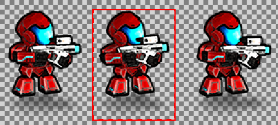
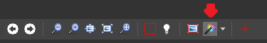

Редактирование спрайтов
Начинающий Дизайнер
После того, как вы импортируете лист спрайтов, вы можете использовать отделенный Редактор спрайтов (Sprite Editor) для выбора спрайта из таблицы спрайтов.
Вы также можете редактировать свойства спрайта в Сетке свойств (Property Grid) как и любой другой актив.
Редактор спрайтов (Sprite Editor)
Чтобы открыть редактор спрайтов, в Просмотре активов (Asset View) дважды щелкните ресурс листа спрайтов.
Лист спрайтов откроется в Редакторе спрайтов.

Установка типа спрайт-листа
Вы можете указать, будет ли лист спрайтов содержать игровые спрайты (Sprite2D) или спрайты пользовательского интерфейса (UI). Это не влияет на то, как спрайт отображается во время выполнения, но позволяет вам устанавливать немного другие свойства, описаны ниже в разделе Свойства спрайта (Sprite properties). Вы можете изменить тип спрайт-листа в любое время.

Добавление спрайта
Нажмите кнопку Добавить пустой спрайт (Add empty sprite).

Game Studio добавит в список пустой спрайт.
В Сетке свойств (Property Grid) справа, в поле Источник (Source), укажите лист спрайтов, содержащий спрайт.
[!Подсказка] Если вы хотите создать новый спрайт из того же листа спрайтов, что и другие спрайты в списке, часто быстрее дублировать существующий спрайт. Чтобы дублировать спрайт, выберите его и щелкните Дублировать выбранные спрайты (Duplicate selected sprites) или нажмите сочетание клавиш Ctrl + D.
Список спрайтов
Sprite Editor перечисляет спрайты вашего проекта слева. Каждый спрайт имеет индексный номер; первый имеет индекс [0], второй имеет индекс [1] и т.д. Вы можете использовать эти индексы в своих скриптах. (см. Использование спрайтов).

Чтобы изменить порядок (и индексный номер) спрайтов, используйте кнопки (Переместить выбранный спрайт вверх/вниз (Move selected sprite up/down)). Например, если переместить [1] Sprite вниз, он станет [2] Sprite.
Чтобы переименовать спрайт в списке, дважды щелкните по нему и введите новое имя.
Установка области текстуры
Спрайты создаются путем определения прямоугольных областей текстуры (texture regions) в таблице спрайтов.

Сделать это можно тремя способами: с помощью инструмента «Волшебная палочка», вручную, задав границы области или указав координаты пикселей в свойствах спрайта.
Использование "Волшебной палочки"
Волшебная палочка автоматически выбирает область текстуры вокруг спрайта. Обычно это самый быстрый способ выбора спрайтов.

Чтобы выбрать или отменить выбор волшебной палочки, щелкните значок на панели инструментов редактора спрайтов или нажмите клавишу M.

Чтобы выбрать, как Волшебная палочка будет определять области текстуры, используйте раскрывающийся список на панели инструментов.
Прозрачность: Волшебная палочка рассматривает края непрозрачных областей как края области текстуры. Например, если спрайт окружен прозрачным пространством, он устанавливает область текстуры на краю прозрачного пространства.
Цветовой ключ: Волшебная палочка определяет области текстуры, используя заданный ниже цвет Цветового ключа (Color key) в редакторе спрайтов. Например, если спрайт окружен абсолютно черным (#FF000000), и вы устанавливаете абсолютно черный цвет в качестве цветового ключа, Волшебная палочка устанавливает область текстуры на краю абсолютно черного пространства.
Ручная установка области текстуры
Вы можете перетаскивать края области текстуры и вручную изменять ее положение.
Установите область текстуры в Сетке Свойств (Property Grid)
Вы можете определить пиксельные координаты области текстуры в Сетке Свойств (Property Grid) под Областью текстуры (Texture Region). X это левый край, Y это вершина, W это правая сторона, и H это низ.

Использование всего листа для спрайта
Если вы хотите использовать для спрайта все изображение спрайт-листа, вы можете сделать это быстро, нажав Использовать все изображение для этого спрайта (Use whole image for this sprite) на панели инструментов. Это полезно, когда в таблице спрайтов есть только один спрайт.
Установка прозрачности
По умолчанию Stride обрабатывает прозрачные области листа спрайтов как прозрачные во время выполнения. В качестве альтернативы вы можете установить ключевой цвет как прозрачный. Для этого выберите Использовать цветовой ключ (Use color key) и укажите цвет. Например, если установить абсолютно черный цвет (#FF000000), области абсолютно черного цвета будут прозрачными во время выполнения.

Вы также можете использовать инструмент выбор цвета (color picker) для выбора цвета из таблицы спрайтов.

Свойства спрайта
Вы можете задать свойства отдельных спрайтов в Сетке Свойств (Property Grid).

| Свойство | Описание |
|---|---|
| Источник (Source) | Путь к спрайт-листу |
| Название (Name) | Имя этого спрайта. Вы также можете изменить его, дважды щелкнув по спрайту в списке в редакторе спрайтов |
| Область текстуры (Texture region) | Область спрайт-листа, используемая для этого спрайта |
| Количество пикселей на единицу (Pixels per unit) | Количество пикселей, представляющих единицу в сцене. Чем больше это число, тем меньше спрайт отображается в сцене |
| Ориентация (Orientation) | Если вы выберете Повернуто90 (Rotated90), Stride поворачивает спрайт на 90 градусов во время выполнения |
| Центр (Center) | Положение центра спрайта в пикселях. По умолчанию центр — 0, 0. Примечание: это свойство доступно только в том случае, если для типа листа спрайтов установлено значение Sprite2D в редакторе спрайтов |
| Центр из середины (Center from middle) | Значение свойства Center должно представлять смещение центра спрайта относительно его середины. Примечание: это свойство доступно только в том случае, если в редакторе спрайтов для типа спрайт-листа установлено значение Sprite2D |
| Границы (Borders) | Размер границ спрайта в пикселях (областей, которые не деформируются при растяжении). X это левая граница, Y это верх, W это право, и W это низ. Для получения более подробной информации см. Установка границ спрайта. Примечание: это свойство доступно только в том случае, если для таблицы спрайтов установлено значение UI слева |
Свойства спрайт-листа
Вы также можете задать свойства для всего ассета спрайт-листа. Чтобы получить доступ к свойствам:
выберите актив листа спрайтов в Просмотре активов (Asset View) и установите параметры в Сетке свойств (Property Grid), или
в редакторе спрайтов нажмите Свойства спрайт-листа (Sprite sheet properties).
Многие свойства совпадают со свойствами текстуры.

| Свойство | Описание |
|---|---|
| Тип листа (Sheet type) | Укажите, будет ли этот лист спрайтов использоваться для 2D-спрайтов или элементов пользовательского интерфейса. Если вы выберете Лист спрайтов для пользовательского интерфейса (Sprite sheet for UI), вы можете определить границы в спрайтах. |
| Цвет ключевого цвета (Color Key Color) | Цвет, используемый для прозрачности во время выполнения. Это применяется только в том случае, если ниже выбрано Цветовой ключ включен (Color Key Enabled) |
| Цветовой ключ включен (Color Key Enabled) | Используйте цвет, заданный в свойстве Цвет ключевого цвета (Color Key Color), для обеспечения прозрачности во время выполнения. Если этот параметр не выбран, вместо этого в проекте используются прозрачные области листа спрайтов |
| Сжатие (Compress) | Сжать текстуру в формат, основанный на целевой платформе. Окончательный размер текстуры будет кратен 4 |
| Цветовое пространство (ColorSpace) | Цветовое пространство для спрайтов в таблице спрайтов (Авто, Линейное или Гамма) |
| Alpha | Формат альфа-текстуры, в который преобразуются все спрайты в таблице спрайтов (Нет, Маска, Явный, Интерполированный или Авто) |
| Генерировать MIP-карты (Generate Mipmaps) | Генерирует MIP-карты для всех спрайтов в таблице спрайтов |
| Предварительное умножение Альфа (Premultiply Alpha) | Предварительно умножить все цветовые компоненты изображений на их альфа-компоненту |
| Разрешить мультиупаковку (Allow Multipacking) | Сгенерировать несколько текстур атласа, если спрайты не помещаются в один атлас |
| Разрешить вращения (Allow rotations) | Поворачивайте спрайты внутри листа спрайтов, чтобы оптимизировать пространство. Это не влияет на отображение спрайтов во время выполнения |
| Размер границы (Border size) | Размер в пикселях границы вокруг спрайтов. Это предотвращает побочные эффекты в спрайт-листе |